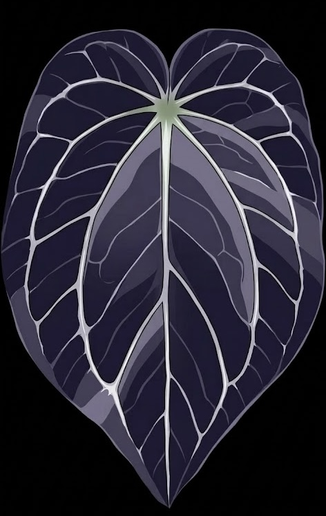

今日の一葉
…

誰が、いつ、どこで名付けたか — アロイドの由来を出典つきで記録する図鑑。原種は記載者・発表年・タイプ産地を学名データベースと一次文献で照合し、交配種・クローンは作出者や交配式をコレクターの投稿から集めています。すべての記録に出典と信頼度を付けています。
非公開の記録です。ほかの人には表示されません。
※ 画像は栽培者自身の投稿のみを掲載しています。権利や内容に問題がある場合は「削除依頼」からご連絡ください。即時対応します。
既存品種に由来を追加する場合は、その品種のページから追加できます。
ログイン中:
投稿の編集・削除ができます
※ 画像投稿はself等も記載可能。選択と株を記載したSNSリンクがあれば記入してください。
非公開の記録は一覧・検索・共有リンク・検索エンジンのいずれにも出ません。あなたがログインしているときだけ表示されます。あとから公開に切り替えられます。
最終更新日: 2026年4月1日
本規約は、Aroid Origins（以下「本サービス」）を利用するすべてのユーザーに適用されます。本サービスを利用した時点で、本規約に同意したものとみなします。閲覧はアカウント登録なしで利用でき、投稿などの一部機能にはGoogleアカウントによるログインが必要です。
本サービスは、植物の品種（原種・ハイブリッド・クローン）の由来情報を収集・共有するプラットフォームです。主な機能は以下の通りです：
ユーザーはGoogleアカウントでログインの上、品種の由来情報、交配式、情報元URLなどを投稿できます（表示名はニックネームを利用できます）。投稿にあたり、以下の事項に同意するものとします：
原種およびクローンについては、AIが公開情報および学名データベースに基づいて由来情報を自動生成・検証する場合があります。ハイブリッドは投稿内容をそのまま掲載し、AI調査は運営が承認したリクエストに対してのみ実行します。実生（My Seedlings）にAI調査は行いません。AIが関与した記録には「AI」の表示と出典・信頼度を併記します。運営チームはAI生成コンテンツの正確性を保証しません。重要な判断に利用する場合は、独自に情報を検証してください。
画像のアップロードに関して、以下のルールを遵守してください：
由来情報に対する評価（正確／疑問）はコミュニティによる情報の検証を目的としています。ボット、スクリプト、組織的な不正投票など、評価結果を人為的に操作する行為は禁止します。運営チームは不正が検出された場合、評価のリセットやアクセス制限を行う権利を有します。
本サービスで提供される植物情報は参考情報であり、専門的な植物学・園芸・農業の助言ではありません。信頼度スコアはアルゴリズムによる推定値であり、情報の正確性を保証するものではありません。植物の栽培・購入・取引等に関する判断は、ご自身の責任で行ってください。
本サービスには楽天市場、Amazon、Yahoo!ショッピングへのアフィリエイトリンクが含まれています。ユーザーがこれらのリンクを通じて商品を購入した場合、運営チームに紹介報酬が発生します。アフィリエイト関係は品種情報や信頼度スコアに一切影響を与えません。本開示は景品表示法に基づくものです。
本サービスには第三者の広告ネットワーク（Google AdSense等）による広告が表示される場合があります。広告の内容は広告ネットワークが管理しており、運営チームは広告内容について責任を負いません。
本サービスの一部機能（My Seedlings：実生の6件目以降の投稿）は、有料のサブスクリプション契約が必要です。
サブスクリプションの自動更新と解約について、以下の通り定めます：
サブスクリプション料金は原則として返金いたしません（日割り返金を含む）。ただし、サービスの重大な不具合等により利用が著しく困難であった場合は、お問い合わせページよりご連絡ください。個別に対応いたします。
以下の行為を禁止します：
運営チームは、事前通知なく本サービスの内容を変更、または一時的・恒久的に停止する権利を有します。サービスの変更・停止によって生じた損害について、運営チームは責任を負いません。
本サービスは「現状有姿」で提供されます。運営チームは、コンテンツの正確性、完全性、可用性、信頼性について、明示的・黙示的を問わずいかなる保証も行いません。本サービスの利用によって生じた直接的・間接的な損害について、運営チームは一切の責任を負いません。
本規約は日本法に準拠し、日本法に基づいて解釈されます。本規約に関する紛争は、運営者の所在地を管轄する裁判所を第一審の専属的合意管轄裁判所とします。
最終更新日: 2026年4月1日
Aroid Origins運営チーム（運営責任者: 久恒 佑太）は、ユーザーのプライバシーを尊重します。本ポリシーでは、本サービスで収集する情報とその取り扱いについて説明します。閲覧はアカウント登録なしで利用できます。投稿にはGoogleアカウントによるログインが必要で、公開されるのはニックネーム等のプロフィール情報のみです。
本サービスでは以下の情報を収集する場合があります：
本サービスはCookieではなくブラウザのlocalStorageを使用して、言語設定（日本語/英語）およびユーザーが追加した品種データをお使いの端末内に保存しています。このデータはサーバーには送信されず、お使いのブラウザ内にのみ存在します。ブラウザの設定からいつでも削除できます。
本サービス自体はCookieを使用しません。ただし、以下の第三者サービスがCookieを使用する場合があります：
サブスクリプションの決済処理について、以下の通り取り扱います：
収集した情報は以下の目的で使用します：
ユーザーが投稿した品種情報は本サービス上で公開されます。運営チームは個人情報を第三者に販売しません。法律に基づく要請（法執行機関からの開示要求等）があった場合にのみ、情報を開示する場合があります。
アップロードされた画像は本サービス上で公開されます。画像にはEXIF情報（撮影場所、端末情報等）が含まれている場合があります。プライバシーを保護するため、アップロード前にEXIF情報を削除することを推奨します。
本サービスでは年齢確認は行っていません。保護者の方には、未成年のインターネット利用を適切に監督していただくようお願いいたします。
本サービスは日本から運営されており、日本法に基づいてデータを処理します。EU/EEA地域のユーザーは、ご自身が投稿したコンテンツの削除をお問い合わせページからリクエストできます。
運営チームは送信されたデータを保護するために合理的な措置を講じています。ただし、インターネット上の送信方法は100%安全ではないため、完全なセキュリティを保証することはできません。
本ポリシーは随時更新される場合があります。変更があった場合は、本ページに更新日とともに掲載します。本サービスを継続して利用することにより、変更後のポリシーに同意したものとみなします。
最終更新日: 2026年4月7日
| サービス名 | Aroid Origins（アロイド・オリジンズ）— アロイド植物の品種由来を記録するウェブ図鑑。運営サイト: https://plantsstory.com（旧称 Plants story） |
|---|---|
| 役務の内容 | 「My Seedlings サブスクリプション」: 会員がご自身で交配・播種した実生の記録を、無料枠（5件）を超えて無制限に投稿できるデジタルサービス。閲覧は全員無料。物品の販売・配送はありません |
| 販売業者 | 久恒 佑太（屋号: Aroid Origins） |
| 運営責任者 | 久恒 佑太 |
| 所在地 | 個人事業のため省略しています。消費者からのご請求があった場合は遅滞なく開示します。plantsstory2026@gmail.com またはお問い合わせフォームからご請求ください（電子メールで開示します） |
| 電話番号 | 個人事業のため省略しています。消費者からのご請求があった場合は遅滞なく開示します。plantsstory2026@gmail.com またはお問い合わせフォームからご請求ください（電子メールで開示します） |
| メールアドレス | plantsstory2026@gmail.com |
| 販売URL | https://plantsstory.com |
| 販売価格 | My Seedlings サブスクリプション（実生投稿の上限解除）: 月額プラン 240円（税込）／ 年額プラン 2,500円（税込）。詳細は料金とサービス内容 |
| 追加手数料 | なし（表示価格以外の料金は発生しません） |
| 支払方法 | クレジットカード・デビットカード（決済代行: Stripe） |
| 支払時期 | お申し込み時に初回決済。以後、契約期間終了時に自動更新されます |
| 商品引渡時期 | 決済完了後、直ちにサービスをご利用いただけます |
| 返品・キャンセル | デジタルサービスの性質上、決済後の返金・日割り返金は行いません。解約はログイン後のプロフィール編集ページから随時可能で、解約後も現在の契約期間の満了日までご利用いただけます。当サイトの不具合によりサービスを提供できなかった場合は個別に対応します |
| 動作環境 | モダンブラウザ（Chrome、Safari、Firefox、Edge の最新版） |
誰が、いつ、どこで名付けたか — アロイドの由来を出典つきで記録する図鑑。
品種情報・実生の閲覧・検索はすべて無料でご利用いただけます。実生（My Seedlings）の投稿は5件まで無料で、有料プラン（サブスクリプション）にご登録いただくと以下をご利用いただけます。
月額プラン: 240円（税込）／ 年額プラン: 2,500円（税込）
お支払いはクレジットカード・デビットカード（決済代行: Stripe）のみとなります。詳細は料金とサービス内容をご覧ください。
運営名称: Aroid Origins（個人事業）
運営責任者: 久恒 佑太
お問い合わせ: plantsstory2026@gmail.com
Aroid Originsは、アロイド植物の品種の由来・歴史情報をコミュニティで収集・共有するプラットフォームです。このページでは、品種情報の閲覧・投稿・編集方法を解説します。
※ 投稿にはGoogleアカウントでのログインが必要です。自分の投稿は後からいつでも編集・削除できます。
4つの区分は「その名前が何を指しているか」で決まります。迷ったら次の順に確認してください。
覚え方: 「その名前の株を種から増やしても同じ名前で売られているか」。売られていればハイブリッド、売られていなければクローンです。
自然界に存在する種、およびその種と考えられる株です。学術的に記載され学名が付いた種（例: Anthurium crystallinum）のほか、未記載の株（sp.）、既知種に近縁だが別種と思われる株（aff.）、既知種と思われるが確定できない株（cf.）、亜種・変種（ssp. / var.）を含みます。人が交配して作った株は、親が同じ種どうしでも原種ではありません。
名前の書き方: 属名＋種小名（Anthurium crystallinum）。未同定株は Anthurium sp. "Peru" のように sp. の後に産地や入手元をダブルクォートで添えます。sp. / aff. / cf. の後には半角スペースを入れます。
判定例: Anthurium crystallinum（Linden & André, 1873 記載）→ 原種。Anthurium aff. besseae（besseae に近いが別物と考えられる株）→ 原種（aff.）。名前は推測せず aff. のまま登録します。Monstera obliqua "Peru" → 原種の産地フォームであってクローン名ではありません。
入力項目:
※ 原種を選択すると、分類詳細チップ（原種/sp./ssp./cf./aff.）が表示されます。
※ 「AI自動記入」ボタンで、学名データベース（IPNI・POWO・GBIF）から記載者・発表年・タイプ産地を取得できます。AI調査を行うのは原種とクローンのみで、ハイブリッドは品種ページからのリクエストを運営が承認したときに実行し、実生には行いません。
特定の交配式（母親 × 父親）から得られた実生群に付けられた名前です。同じ名前を名乗る株が複数あり、それぞれ遺伝的に異なる兄弟株です。交配者が選抜個体に名前を付けたあとも、同じ交配を繰り返して同じ名前で流通させる場合はこちらに当たります。
名前の書き方: 属名＋'ハイブリッド名'（Anthurium 'Mystique A88'）。交配式は必須で、親が登録済みならその品種ページにリンクされます。
判定例: Anthurium 'Mystique A88'（'Dorayaki' × 'Red Crystallinum'、Mr. Chandra 作出。流通株は同じ交配式の F1 兄弟）→ ハイブリッド。Philodendron 'Glorious'（gloriosum × melanochrysum、種子・組織培養で大量流通）→ ハイブリッド。名前の付いていない「'Dark Mama' × papillilaminum」のような交配式そのものは、ハイブリッドではなく実生として登録します。
入力項目:
※ ハイブリッドでは交配式の入力が必須です。
たった1個体に付けられた名前です。その名前を名乗ってよいのは、その個体を株分け・挿し木・組織培養で増やした株だけです。交配親が判明していても、名前が「その交配の全兄弟」ではなく「選抜された1株とそのコピー」を指すならクローンです。原種の中から選ばれた特別な個体（斑入り、暗色個体）や、組織培養で生じた変異個体もクローンです。
名前の書き方: 属名［＋種小名］＋'クローン名'。単一の原種に由来する場合は種小名を必ず含めます（Monstera deliciosa 'Thai Constellation'）。種間交配や親不明の場合は属名＋'クローン名'（Anthurium 'Ace of Spades'）。
判定例: Anthurium 'Dark Mama'（母株からの株分け・クローンとして流通。'Dark Mama' の自家受粉実生は 'Dark Mama' ではなく「'Dark Mama' self」の実生）→ クローン。Anthurium 'Ace of Spades'（Denis Rotolante が実生から1株を選抜・命名。交配式は不明でよい）→ クローン。Monstera deliciosa 'Thai Constellation'（組織培養で生じた斑入り変異個体）→ クローン。Anthurium 'King of Spades'（Haji Ulih 氏が命名したオリジナル個体がある）→ クローン。流通しているオリジナルの実生は同じ名前で呼ばれていても F 個体であり、本クローンではありません。
入力項目:
※ 画像はSNSリンクと合わせて投稿すると、どの個体の写真か判別しやすくなります。
趣味家が自分で交配・播種した株の記録です。名前はまだ無く、交配式と播種日、親株の写真で識別します。将来その中の1株に名前を付けて株分けで配布するなら、その時点でクローンとして新規登録します。実生群全体に名前を付けて同じ交配を繰り返し流通させるならハイブリッドです。
名前の書き方: 属名＋交配式（Anthurium forgetii × 'Titanium'）。交配式全体をクォートで囲まないでください。自分の管理番号（HR1 など）はダブルクォートで添えます。
判定例: Anthurium carlablackiae "HR1" × carlablackiae "HR2"（同種どうしの交配でも原種ではない）→ 実生。Anthurium forgetii × 'Titanium' → 実生。ナーセリーが同じ交配を毎年繰り返して 'Galaxy' の名で販売 → ハイブリッド。
入力項目:
※ 編集・削除ができるのは自分が投稿した品種のみです。
既存の品種に新しい由来情報を追加できます:
ご質問、著作権に関するお問い合わせ、コンテンツの削除要請などがございましたら、以下よりご連絡ください。
内容は運営チームに送信されます。返信が必要な場合は正しいメールアドレスをご記入ください。
最終更新日: 2026年9月5日
Aroid Origins（運営: 久恒 佑太）は、アンスリウムなどアロイド植物の品種について「どこから来たか」を記録する日本語のウェブ図鑑です。原種の記載者・発表年・タイプ産地、交配種・クローンの作出者や交配式を、学名データベースと一次資料、コレクターの投稿から集め、出典と信頼度つきで掲載しています。
実生（ご自身で交配・播種した株の記録）を 6件目以降も無制限に投稿できるようになる定期購読サービスです。閲覧に課金することはありません。
| プラン | 月額プラン 240円（税込）／ 年額プラン 2,500円（税込） |
|---|---|
| 提供内容 | 実生（My Seedlings）投稿数の上限解除（親株写真・交配式・播種日の記録、公開ページと系統図への掲載） |
| 提供時期 | 決済完了後ただちに有効になります（デジタルサービスのため配送はありません） |
| 支払方法 | クレジットカード・デビットカード（決済代行: Stripe）。カード情報は Stripe のページで入力され、当サイトのサーバーには保存されません |
| 支払時期 | お申込み時に初回分を決済。以後、契約期間の満了日に同じプラン・同じ料金で自動更新され、その日に翌期間分が請求されます |
| 契約期間 | 月額プランは1か月、年額プランは1年（自動更新） |
| 解約方法 | ログイン後、プロフィール編集ページの「サブスクリプションを解約」からいつでも解約できます。解約後も現在の契約期間の満了日までご利用いただけ、以降の請求は発生しません |
| 返金 | デジタルサービスの性質上、決済後の返金・日割り返金は行いません。ただし、当サイトの不具合によりサービスを提供できなかった場合は、お問い合わせのうえ個別に対応します |
| お問い合わせ | plantsstory2026@gmail.com（お問い合わせフォームからも受け付けます。3営業日以内に返信します） |
お申込み前に 特定商取引法に基づく表記 と 利用規約 をご確認ください。
品種の由来ページに出てくる言葉を、このサイトでの使い方に沿って説明します。
あなたが投稿した品種の一覧です。
ログインすると投稿履歴を確認できます。
まだ投稿がありません。
設定するとプロフィールURLが短くなります
0/500
実生の投稿は5件まで無料です。6件目以降の投稿にはサブスクリプションが必要です。閲覧はどなたでも無料でご覧いただけます。
お申込み内容の確認（特定商取引法に基づく表示）
決済は Stripe の安全な決済ページで処理されます。カード情報は当サイトのサーバーには保存されません。解約後も投稿済みの実生は閲覧・削除が可能です。料金とサービス内容